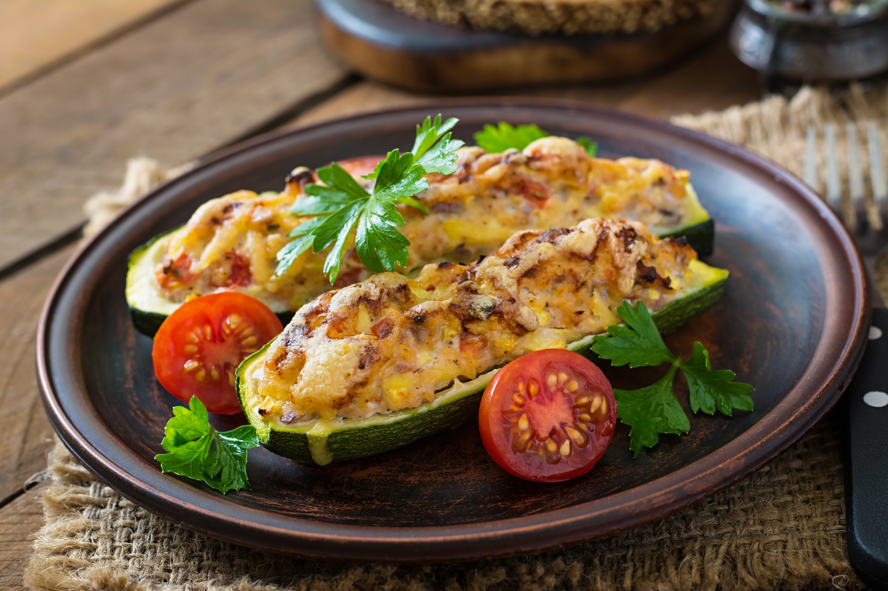

Zucchine Boats recipe

Image by timolina on Freepik
Description
These zucchini boats, with fork-tender zucchini halves piled to the brim with a delicious meaty tomato filling, are a perfect carb-free dinner. Italian seasoning ties the flavors together, and the golden-brown cheese crust adds a nice tang.
Ingredients
- 4 zucchini
- 1 teaspoon dried italian seasoning
- 1/4 teaspoon ground black pepper
- 1 teaspoon kosher salt, divided
- 1 pound mild italian pork sausage
- 1/2 cup minced yellow onion
- 2 teaspoones minced garlic
- 1 1/2 cups marinara sauce
- 1 ounce grated Parmesan cheese
- 1 tablespoon finely chopped mixed fresh tender herbs, such as flat-leaf parsley and basil
- 6 ounces shredded low-moisture whole-milk mozzarella cheese
Steps
- Gather the ingredients.
- Preheat the oven to 400 degrees F (175 degrees C). Spray a 13-x9-inch baking dish with cooking spray.
- Cut zucchini in half lengthwise; cut off and discard stem ends. Using a spoon, scoop and scrape out pulp from center of each zucchini half, creating a 1/2-inch-thick shell. Measure out 3/4 cup zucchini pulp, and discard or reserve remaining pulp for another use. Arrange zucchini halves, cut side up, in prepared baking dish. Sprinkle evenly with Italian seasoning, black pepper, and 1/2 teaspoon of the salt.
- Heat a large skillet over medium-high heat. Add Italian sausage; cook, stirring and breaking up with a spatula, until browned and crumbly, about 5 minutes. Stir in onion, garlic, crushed red pepper, the 3/4 cup zucchini pulp, and remaining 1/2 teaspoon salt; cook, stirring occasionally, until vegetables are softened and liquid is absorbed, about 5 minutes. Stir in marinara, and bring to a simmer over medium-high heat. Simmer, undisturbed, until slightly thickened, 3 to 5 minutes. Remove from heat.
- Spoon about 1/2 cup pork mixture into each zucchini half; sprinkle evenly with mozzarella and Parmesan.
- Bake in the preheated oven until zucchini is tender and cheese is melted and golden brown, 20 to 25 minutes. Sprinkle evenly with herbs; serve immediately.